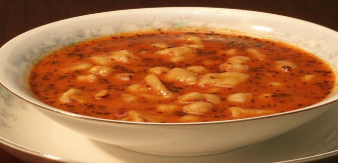
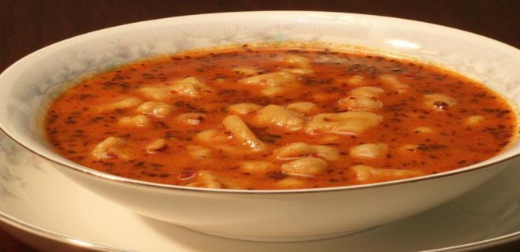

Adapazarı olarak da anılan Sakarya, Marmara Bölgesi'nin en büyük 5.şehridir. Karadeniz'e dökülen Sakarya Nehri etrafına kurulmuş şehir, yüzölçümü bakımından Türkiye'nin 66. şehridir.İstanbul-Ankara arasında konumlanması nedeniyle her geçen yıl gelişen il, nüfus bakımından yaklaşık milyonluk nüfusuyla Türkiye'nin en kalabalık 22.şehridir.
Sakarya'nın 16 ilçesi (Adapazarı,Akyazı,Arifiye,Erenler,Ferizli,Geyve,Hendek Karapürçek,Karasu,Kaynarca,Kocaali,Pamukova,Sapanca,Serdivan,Söğütlü,Taraklı) vardır. Bu ilçelerde toplam 655 mahalle bulunur. Kuzeyde Karadeniz'e sınırları bulunan Sakarya'nın komşu illeri olarak batısında Kocaeli ve Bursa, Doğusunda Düzce, güneyinde Bilecik, güneydoğusunda ise Bolu bulunmaktadır.Şehrin Karadeniz kıyılarında Karadeniz iklimi hakimken, il merkezi ve güney kısımlarda Marmara tipi Akdeniz iklimi görülür.
Sakarya, İstanbul-Ankara otoyolu üzerindeki konumu ile ulaşımı kolay bir ilimizdir. İl merkezide karayolu ve demiryolu ile ulaşma imkanı bulunurken Sakarya merkezinde havalimanı bulunmaz.
Sakarya ilinin bilinen târihi Hititlerle başlar. Anadolu’da ilk siyâsî birliği kuran Hititler, bu bölgeyi sınırları içinde bulundurmuşlardır. Hitit Devleti iç karışıklıklar ve bölünmeler neticesi yıkılınca, bu bölge Friglerin eline geçti. Dış güçlerin tahrikiyle iç karışıklıklar ve bölünmelerden sonra yıkılan Friglerin yerine bölgeye Lidyalılar hâkim oldular. Persler, M.Ö. 6. asırda Lidya Devletini yenerek Anadolu’nun mühim kısmını işgal ettiler. M.Ö. 4. asırda Makedonya Kralıİskender, Pers Devletini yenerek İran’ı ele geçirdi. İskender’in ölümü üzerine bu bölge, halefleri arasında ihtilaf konusu oldu. Bitinya Krallığı, Makedonya Krallığına karşı İskender’in ölümünden sonra iç bağımsızlığını ilânetti ve bu bölgeye hâkim oldu. M.Ö. 1. asırda Roma İmparatorluğu, Bitinya Krallığı ile birlikte bu bölgeyi alarak kendi topraklarına kattı. M.S. 365’te Roma İmparatorluğu ikiye bölününce Anadolu’nun diğer kısımları gibi Bitinya bölgesi de, Doğu Roma (Bizans)nın payına düştü. Altıncı asırda Justinianus, Bitinya bölgesine önem verdi. İslâm orduları, zaman zaman ve bilhassa İstanbul’un fethi için, bölgeden geçerken buraları fethetmişlerse de, uzun müddet kalmadılar. Ayrıca Sâsâniler de zaman zaman bölgeye akınlar yaptılar.

1071 Malazgirt Zaferinden sonra, Anadolu Fâtihi Kutalmışoğlu Süleyman Şah emrindeki Türk ordusu, bütün Anadolu gibi Sakarya bölgesini de fethetti. İznik başşehir yapılarak, Büyük Selçuklu Devletine bağlı Türkiye Selçukluları Devleti kuruldu. Bunun üzerine Bizans’ın teşvikiyle Haçlı Seferleri başladı. Birinci Haçlı Seferinde İznik terk edilerek başşehir Konya’ya taşındı. Bu bölge (Sakarya) ve Kocaeli yeniden Bizans’ın eline geçti. On dördüncü asırda Orhan Gâzi devrinde, Kocaeli ve Sakarya bölgesi, ikinci defâ fetholunarak Osmanlı Devletinin sınırları içine alındı ve o târihten bu yana Türk hâkimiyetinde kaldı. Kânûnî Sultan Süleymân Han, İzmit Körfezini SakaryaNehri vâsıtasıyla Sapanca Gölüne bağlayıp, dünyânın en büyük iç limanını meydana getirmeyi düşünmüştü. Bu işi Mîmar Sinân yapacaktı. Seferler sebebiyle bu plân gerçekleşemedi. Sultan İkinci Mahmûd Han, bu plânı yeniden ele aldı. 30 bin işçi temin edildi. Fakat dış gâileler sebebiyle bu plân gerçekleşemedi.

1921’de Yunan ordusunun işgâline uğrayan Sakarya, Millî Mücâdelede çok önemli rol oynamış olan bir şehirdir. Adapazarı, Karasu, Kandıra ve Geyve çarpışmaları Sakarya ilinin kahraman evlatları sâyesinde zaferle neticelendi. 25 Mart 1921’de başlayan işgal, 21 Haziran 1921’de sona erdi. Adapazarı; Tanzimattan sonra kurulan, müstakil sancak hâline getirilen Kocaeli sancağına, Cumhûriyet devrinde de 1954’e kadar Kocaeli’ne bağlı kaldı. 1954’te Kocaeli ilinden ayrılan bir bölüm, Adapazarı il merkezi olmak üzere Sakarya ili kuruldu. Kocaeli’nin doğu yarısında kalan ilçeleri Sakarya iline bağlandı.

 

Sakarya’nın ulusal düzeyde tanınmış en önemli yemeği “Islama Köftesi' dir. XX. yüzyılın başlarında Balkanlardan yöremize göçlerle geldiği sanılan ıslama köftenin, diğer yöre köftelerinden en belirgin farklılığı, yöredeki yaylalarda yetişen hayvanların etlerinden yapılan “köftesi” kadar, “kemik unu ve toz biberli sosa batırılıp kızartılmış” olan enfes ekmeğidir. Ülkemizin birçok bölgesinde köfte ünlüdür ancan, Sakarya'nın ıslama öftesinin diğerlerinden oldukça farkı vardır.
Tüm ülkede tatlı denince akan sular durmaktadır. Neredeyse her ilin kendisine has tatlısı bulunmaktadır. Sakarya'nın ünlü ve popüler tatlısı ise Kabak Tatlısı'dır. Kabak tatlısının birçok çeşidi bulunmaktadır hatta ben bazılarına tatlı bile demeyi fazla görüyorum ancak kabak tatlısı servis biçimi ve üzerine koyulanlar ile çok ayrı bir yere sahiptir. Sakarya'ya gittiğinizde kesinlik kabak tatlısını denemenizi öneririz.
Sakarya'ya ait meşhur yemeklerden bir tanesi de Dımbıl Çorbası'dır. Bu çorba su ve mayasız hamurdan yapılmaktadır. Oldukça hafif bir çorba özelliği taşırken, lezzetiyle de herkesi mest etmektedir


Çark Caddesi, Sakarya'nın Adapazarı ilçesinde il merkezinde bulunan, şehrin en işlek caddesidir. Günün her saati haraketli olan Çark Caddesi'nde birçok kafe, bar, restoran ve hediyelik alışveriş yapacak mekan bulunmaktadır. Çark Caddesi, 17 Ağustos 1999 depreminde büyük zarar görmüşse de günümüzde tekrar toparlanmış ve Sakarya'nın adeta kalbi olmuştur.Eskiden araç trafiğine açık bir cadde olsa da günümüzde sadece yaya trafiğine açık bir caddedir.


Sapanca Gölü, Marmara Denizi'nin bir parçasıyken, denizden ayrılıp tek başına tatlı su gölü haline gelmiştir. Yapılan çalışmlara göre 80 civarı kuş türünün gözlemlendiği Sapanca Gölü, yıl boyunca on binlerce kuşa konaklama imkanı sunmaktadır. Gölde yaygın olarak görülen balık türleri ise yayın,sazan ve turnabalığıdır.
Sapanca Gölü, yoğun nüfuslu yerleşim bölgelerine yakın bulunması sayesinde ulaşım için elverişli bir konumdadır. Çarpıcı bir doğanın içinde yer alan göl, kamp ve piknik yapmak için güzel alanlara sahiptir. Sapanca Gölü, ulusal uluslararası sörf,yelken ve kürek yarışlarının da yapıldığı bir noktadır. Ayrıca gölde kano ile gezinti yapılabilmektedir.
Sapanca Gölü'nün çevresinde çok sayıda konaklama seçeneği mevcuttur. Birçok lüks otel ve kiralık villa ziyaretçilere hizmet vermektedir. Otellerin yanı sıra pansiyonlar da bulunmaktadır. Bölge turizm açısından gelişmiş olanakları ile geniş bir konaklama ve ulaşım yelpazesine sahiptir.

Sakarya'ya 6 km mesafede bulunan Poyrazlar Gölü, etrafı yemyeşil tepeler ve ormanlarla çevrili oldukça büyük bir göl. En derin yeri 12 metre olan gölün dibi bataklık olduğundan yüzmek yasak ancak gölün çevresinde yapılabilecek sayısız aktivite mevcut. Milli parklar kapsamında yer alan Poyrazlar Gölü, doğa içerisinde bir gün geçirmek isteyen günübirlikçiler için fazlasıyla ideal bir adres. Poyrazlar Gölü, neredeyse Abant Gölü kadar büyük bir göl ancak etrafında Abant Gölü'ndeki gibi bir yürüyüş parkuru yok. Ancak kıyısı boyunca ve orman içerisinde yürüyebileceğiniz birkaç yol bulunuyor. Poyrazlar Gölü'ne ulaşım sağlamak da son derece kolay. Yol düzlük. Milli parklar kapsamında olduğu için giriş ücretli. Çoğunlukla yerli halkın akın ettiği göl, hafta sonları bir hayli kalabalık oluyor. Poyrazlar Gölü'nün etrafında piknik yapabileceğiniz birçok ahşap masa yer alıyor. Bununla birlikte bisiklet kiralayıp, gölün çevresini keşfedebilmeniz de mümkün. Gölün karşı kıyısındaki girişin yanında ise bir lunapark yer alıyor. Özellikle çocuklu ailelerin eğlenebileceği farklı bir alternatif olarak göze çarpıyor bu lunapark. Dilerseniz gölde olta ile balık da tutabilirsiniz


Acarlar Longozu, ülkemizin tek parça halindeki en büyük longozu yani su basar ormanı olarak bilinmektedir. Oluşum şekli olarak adeta bir kıyı set gölüdür.Longozun asıl anlamı su içine batmış ormandır. Acarlar Longozu, Dünya’da yer alan en büyük longoz olarak da bilinmektedir. Bu tip yerlerde yani longozlar da çok fazla hayvan yaşamaktadır. Özellik ile çok fazla balık çeşidi bölgede yaşamaktadır. Aynı zamanda suyun çok olması ile beraber bitki örtüsü de son derece fazla gelişmektedir. Longozlar tam bir doğa harikasıdır. Bu bölgenin etrafında harika bir tatil yapabilirsiniz.
Yılın belli mevsimlerinde su kuşları kuluçkaya yattıklarından dolayı su motorları çok ciddi zararlara yol açabilmektedirler. Longozun etrafında yaklaşık olarak 600 metrelik bir yürüyüş yolu bulunuyor. Bu yolda sadece ağaçların ve çeşitli kuşların sesleri duyuluyor. Aynı zamanda öğlen saatlerinde burada yaşamlarını sürdüren ördekleri de beslemeniz mümkün oluyor. Longoza girişler ücretsizdir. Aynı zamanda isteyen ziyaretçiler yanlarında kendi etlerini getirerek burada bulunan küçük ahşap restorandan bir mangal da kiralayabilirler. Daha sonrasında ise ufak iskelelerden birinde biraz oturabilir ve dinlenebilirsiniz. Longozda tekne turları da düzenleniyor. Şayet bu tekne turlarına katılmak isterseniz kişi başı 30 TL gibi bir ücret ödeniyor. Tur toplamda yaklaşık olarak 20 dakika sürüyor.
Bölgenin etrafında belli başlı oteller yer almaktadır. Bunun dışında Karasu bölgesinde yer alan çeşitli otel ve pansiyonlarda da konaklamak mümkündür. Longozun girişinde ahşaptan yapılan bir restoran bulunmaktadır. Dilerseniz kendi yiyeceklerinizi ve etinizi getirebilir ve piknik alanında yemek yiyebilirsiniz. Etlerinizi yanınızda getirip mangal kiralamak da mümkündür.
Acarlar Longozu, Sakarya‘da yer almaktadır. Longoz, Karasu ve Kaynarca ilçelerinin ortasında bulunmaktadır. Longozun Karadeniz’e uzaklığı ise yaklaşık olarak 700 metredir. Dilerseniz aracınız ile gelip burayı ziyaret edebilirsiniz. Dilerseniz de çeşitli turizm şirketlerinden otobüs bileti alabilir ve Sakarya’ya ulaşabilirsiniz. Daha sonrasında bölgenin etrafında yer alan köylere gelen çeşitli minibüsler ile longoza ulaşabilirsiniz.
Kuzuluk Kaplıcaları Sakarya'nın Akyazı ilçesinde doğanın bize sunduğu şifalı su kaynaklarından biridir.Dinlenmek, bol bol istirahat etmek için huzurlu bir tatil planları yapıyorsanız eğer, tatilinizi Sakarya'nın bu güzel beldesinde geçirebilir ve Kuzuluk Kaplıcaları'nın termal sularının keyfini çıkarabilirsiniz. Bu kaplıca bölgesi Selçuklular döneminden bu yana şifa dağıtmaya devam etmekte. Bölgede konaklayabileceğiniz tesisler bulunuyor. Otellerde termal tedavi merkezleri bulunmakta olup, kaynak sularından bolca faydalanabiliyorsunuz.


Karasu-Kocaali arasından içeriye doğru girince Çam Dağları’ndan kaynaklanan Maden Deresi’ne ulaşılır. Derenin sesini dinleyerek, yeşile bürünmüş bir çevrede yürüyüşler yapmak ve güzel bir kır sofrası kurmak için ideal bir yerdir. Maden deresinde çeşitli etkinlikler yapabilirsiniz. Bu etkinlikler; yürüyüş yapmak, piknik yapmak, fotoğraf çekmek gibi bir çok etkinlik yapabilirsiniz. Maden deresi, kalıntıların arasından büyük bir coşkuyla akan şelalenin sesini dinleyerek uzun yürüyüşler yapmak için ideal bir toprak yola sahiptir. Kayın, çınar, ceviz ve fındık ağaçları arasında yürürken, yeşilin ne kadar çok tonu olduğuna şaşıracaksanız.
Maden Deresi’nde şelâle, eski baraj kalıntıları, yontma taşlar, Fransızlar tarafından yapılıp Kurtuluş Savaşı sırasında tahrip edilen simli kurşun madeni işleyen fabrika yerinde yapılan kazı çalışmaları da görülecek yerlerdendir. Yürüyüş alanının doğal dokusu, 19. yüzyılda yapılmış olan maden tünelleri ve suyolları, yüz yıl öncesine ait taş işçiliği ile yapılmış olan küçük barajın görüntüsü, barajın üzerinden dökülen şelale insanı tarihin derinliklerine götürüyor.
Kâh çocuklar gibi paçalarınızı sıvayıp derenin coşkusuna eşlik edebilir, kâh mevsimine göre yaban çileği veya böğürtlen toplayıp afiyetle yiyebilirsiniz. Yolun sonunda ise, sizi ağaçların altına kurulu ahşap kamelyalarıyla bir alabalık çiftliği karşılıyor. Geceyi ailenizle ya da arkadaşlarınızla birlikte çadır kurup kamp yaparak geçirebilirsiniz.
Daha çok yer keşfetmek isteyen kullanıcılar için aşağıdaki liste faydalı olacaktır.


Sakarya Üniversitesi'nin temelini 1970 yılında açılan Sakarya Mühendislik ve Mimarlık Yüksekokulu oluşturur. 1971 yılında Sakarya Devlet Mimarlık ve Mühendislik Akademisi’ne dönüşen yüksekokul, 1982-1992 yılları arasında İstanbul Teknik Üniversitesi’ne bağlı bir fakülte olarak öğretime devam etmiştir. 3 Temmuz 1992 tarih ve 3837 Sayılı Kanun ile Sakarya Üniversitesi kurulmuştur. 18 Mayıs 2018 tarihli Resmî Gazete'de yayınlanan KHK ile bazı akademik birimler yeni kurulan Sakarya Uygulamalı Bilimler Üniversitesi'ne aktarılmıştır. 90 sonrasında kurulan üniversiteler arasında akademik ve teknik altyapısını hızla tamamlayanüniversitemiz idari birimleri ile ISO-2002 Kalite Belgesi ile "EFQM Mükemmellik Yetkinlik SeviyesiKalite Belgesi"ne sahip ilk ve tek devlet üniversitesi olup laboratuvar, eğitim ve sosyal hizmetler,Internet alt yapısı ve bilişim sektöründeki atılımlarıyla bir çok üniversite için örnek oluşturmaktadır.
Sakarya Üniversitesi’nde 13 fakülte, 6 enstitü, 2 yüksekokul ve 2 meslek yüksekokulu bulunmaktadır.
Sakarya’nın öğrenci yoğun ilçesi Serdivan’da yer alan ve Mavi Durak olarak anılan cadde, restoranları, kafeleri, eğlence ve kültür merkezleriyle öğrencilerin en gözde mekanı. Doğum günlerinin, beraberce maç izlemenin, ucuz ama lezzetli yemeklerin, kahvaltı organizasyonlarının, özlenen sevgiliyle buluşmanın, kafa dağıtmanın vazgeçilmez adresi. Öğrencilerin kültür sanat etkinliklerini de kısmen de olsa takip etme fırsatı bulduğu bölgede, dans, müzik, sinema, tiyatro ya da drama eğitimi veren kurs ya da kültür merkezleri de yer alıyor. Öğrencilerin yanısıra akademisyenlerin de uğrak yeri olan Mavi Durak, öğrencilerle özel gün ve kutlamalarda bir araya gelinen, kahve eşliğinde kitap okumanın keyfine varılan bir mola ya da buluşma noktası.
Peki ya Serdivan’ın öğrenci merkezi Mavi Durak’ın adı nereden geliyor? Rivayetlere göre Mavi Durak adını 3-5 yıl önce bölgede yer alan mavi boyalı bir otobüs durağından almış. Mavi Durak adı bugün öyle benimsenmiş ki, Sakarya’da öğrenci olduğunuzu kanıtlamanız için bu mevki hakkında mutlaka bilgi sahibi olmanız gerekiyor. Mavi Durak’ı müdavimlerine, yani öğrencilere sorduğumuzda verilen cevaplar da bu mekanın vazgeçilmezliğine vurgu yapıyor.